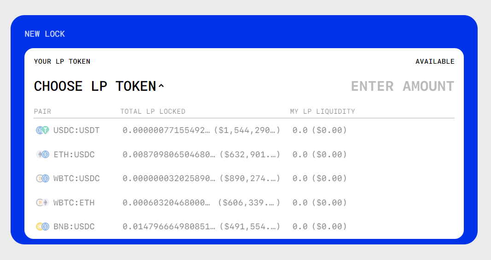
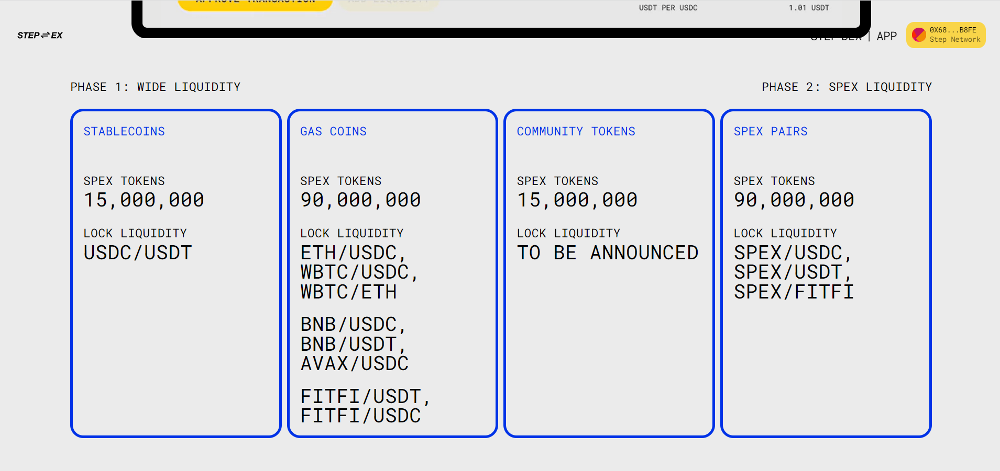

StepApp Lockdrop
Stack:
React.js Next.js Helmet Styled Components Solidity Step Network

Step App (FITFI) is a project based on the Step protocol for FitFi
(Fitness Finance) where users and their metaverse avatars complete
fitness quests and PvP (player versus player) challenges. Cowchain team
responsibility in this project was to build the decentralized
application which implements well-known liquidity attraction mechanism -
lockdrop. Lockdrop is the mechanism that allows to lock as much as
possible liquidity in decentralized exchanges by attracting people with
LP tokens lock and immediate SPEX token rewards. Such mechanism allowed
to braing 8M+$ liquidity to the DEX in first 2 days.

